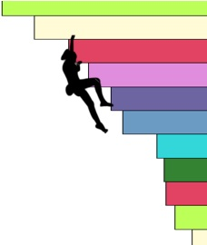

{% extends "base.j2" %}

{% block content %}

<br>
<div class="contenthead">
<div id="contenttitle">CragCrunch: Insight Data Science Project</div>                                  
<div id="logoimg"></div>
</div>
<br>
<h3>Project Details:</h3>

<Main steps of analyses are documented here:

<ul>
<li><a href="../notebooks/Notebook_1_My_Problem">Notebook 1. My Problem</a></li>
<li><a href="../notebooks/Notebook_2_My_Problem">Notebook 2. Data Acquisition</a></li>
<li><a href="../notebooks/Notebook_3_My_Problem">Notebook 3. Data Wrangling</a></li>
<li><a href="../notebooks/Notebook_4_My_Problem">Notebook 4. Data Exploration</a></li>
<li><a href="../notebooks/Notebook_5_My_Problem">Notebook 5. Climb Similarity</a></li>
<li><a href="../notebooks/Notebook_6_My_Problem">Notebook 6. Clustering</a></li>
<li><a href="../notebooks/Notebook_6_My_Problem">Notebook 7. Personalized Recommendations</a></li>

</ul>

<br>
Full project code available on <a href="https://github.com/askerry/cragcrunch"> github</a>
<br>
<br>
<div class="contenthead">
<div id="contenttitle">Amy Skerry</div>                                  
<div id="faceimg"></div>
</div>
Social Cognitive Neuroscience Lab, Department of Brain and Cognitive Sciences, MIT
<br>

{{ text }}

here are links to code, etc. 
{% endblock %}